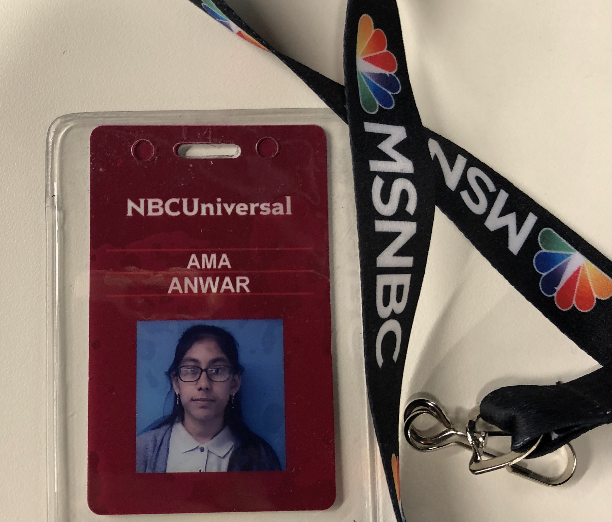
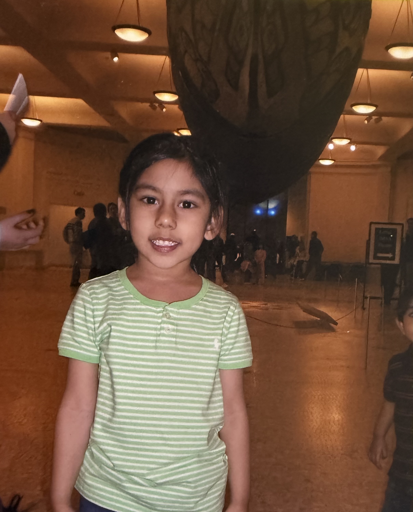
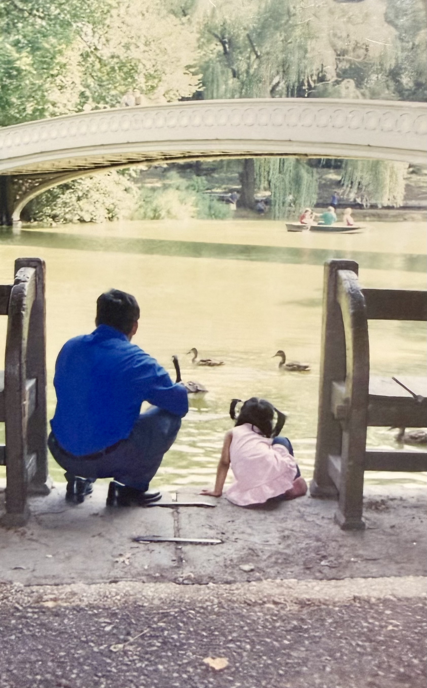
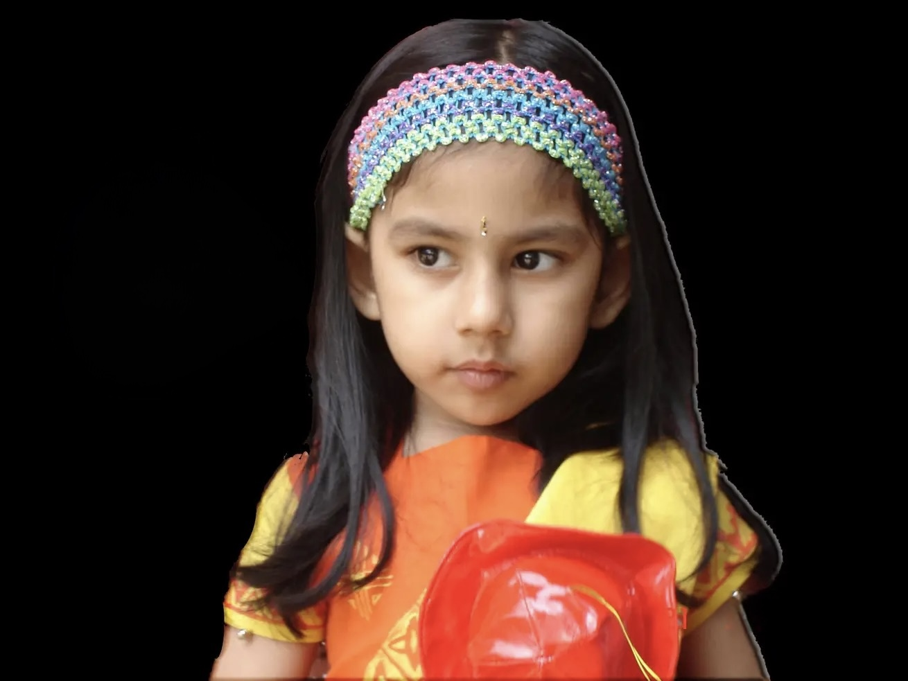

ABOUT ME
A little about me.
I'm Ama. I'm interested in research, clinical care, and the humanities.
About me
Why Biomedical Engineering
I liked to read and write, which led me to consider science journalism! But, I also enjoyed design. Biomedical Engineering (BME) combines my desire to innovate and create solutions that will positively impact the lives of others. Through my work, I communicate and translate problems into scientific research and medical devices for communities.

Who I am



Visits to the American Museum of Natural History and spending afternoons in Central Park shaped me to become curious and observant of my surroundings. I grew up in a culturally distinct household, where I felt inspired to explore historical-political and social issues in Bangladesh.